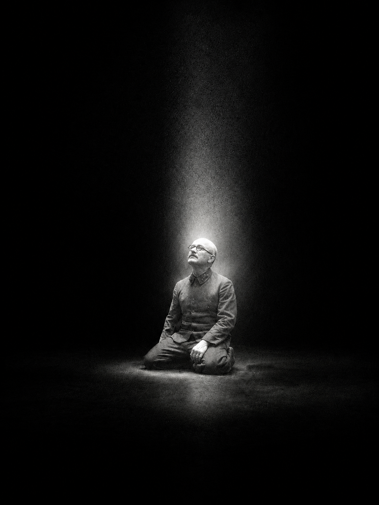
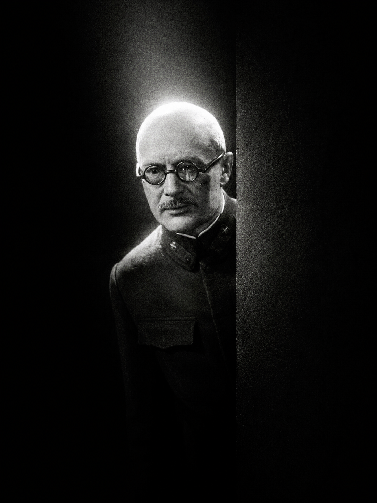
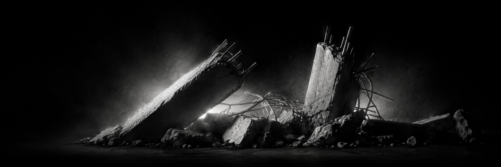
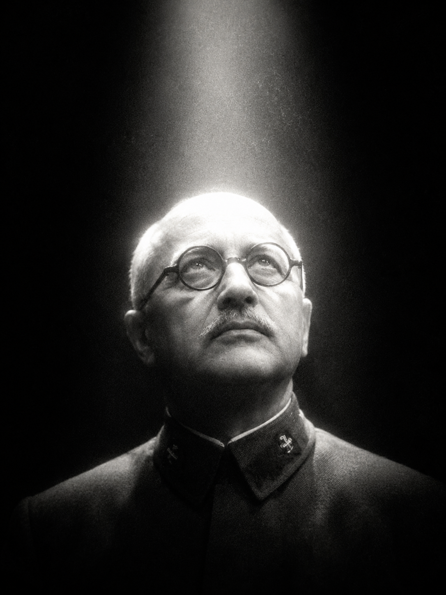
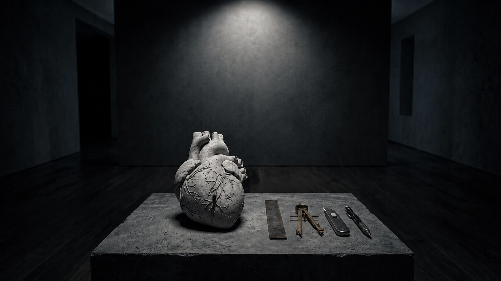
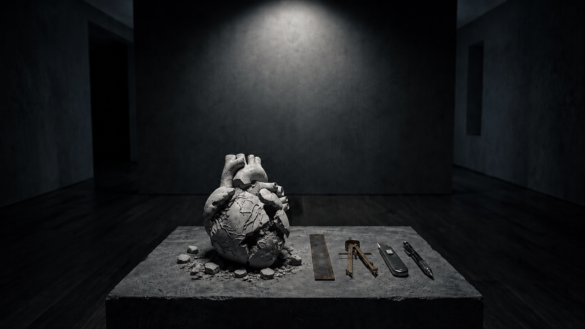
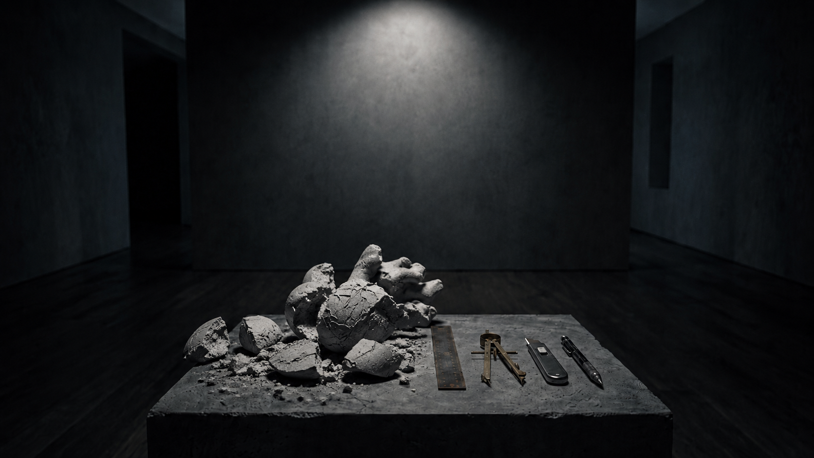

цифровая экспозиция
Дело Артура Лолейта
Великие личности всегда наталкиваются на яростное противодействие посредственных умов

Пролог · бетон и трагедия
Бетон окружает нас повсюду: мы живём в бетонных зданиях, которые, в свою очередь, стоят на железобетонных перекрытиях. Однако мы не догадываемся, как разработка методов конструирования таких сооружений привела их изобретателя к трагедии.
4 июня 1933 года инженер А. Ф. Лолейт покончил жизнь самоубийством, бросившись под поезд на станции «Перловская» Московско-Ярославской железной дороги. Ему было 64 года.
В тот момент, когда конференция присоединится к этому положению, я буду считать свою задачу законченной в том смысле, что я буду считать себя до некоторой степени пророком, вопиющим в пустыне.
Эти слова инженер Артур Лолейт произнёс на Первой Всесоюзной конференции по бетону и железобетону. Лолейт предложил новый способ расчёта железобетонных конструкций, который помог бы точнее понимать предел прочности сооружений.

Артур Фердинандович Лолейт
1868 — 1933

Отвергнутая идея · потеря авторства
Комиссия отвергла этот проект… А через восемь лет, в 1938 году, он лёг в основу советских норм расчёта железобетона. Но без указания авторства Лолейта.
В 1948 году вышла книга под редакцией В. М. Келдыша — главного противника инженера. О вкладе Лолейта в ней не было сказано ни слова.
Проекты А. Ф. Лолейта
1892 — 1927
Артур Лолейт одним из первых в мире начал применять железобетон в конце XIX века, опередив весь мир в изобретении безбалочных перекрытий.
Наследие Лолейта окружает нас повсюду. Только в Москве он спроектировал и построил более десятка известных зданий.
Сквозь время
Конец XIX — начало XX века. Промышленность в России набирает обороты: строятся заводы, фабрики, вокзалы, торговые пассажи… В это время Артур Лолейт работает на стыке инженерии и конструктивной эстетики.

Давление системы
Уверенный в своей правоте и сердцем болеющий за успех дела, Артур Фердинандович не собирался отступать. Он шёл против большинства, его жизнь стала невыносимой.
Я видел Лолейта незадолго до смерти. Он был невероятно угнетён и измучен. Говорил, что собирается уходить из Военной академии (кафедру железобетонных конструкций, где Лолейт работал, возглавлял всё тот же В. М. Келдыш. — Е. Ш.), что его бьют за всякое проявленное желание приносить пользу.



коснитесьФормулы, схемы, чертежи? Или здания, в основе которых лежат их разработки?
Сделайте выбор: коснитесь сердца или возьмите один из инструментов инженера. Инструмент инженера — продолжение его мысли.
Гений, как передовой разведчик войска, нередко забегает слишком далеко вперёд… Он предлагает часто слишком многое, слишком новое, за ним толпа следовать не может и, уморивши его голодом, ставит ему памятник много позже. <…> Но гений, как и природа, не может поступать иначе, чем поступает.
Артур Фердинандович Лолейт так и не увидел признания своей теории. Он покоится в скромной могиле на Введенском кладбище, а его имя осталось забытым.
О вкладе Артура Лолейта не знает почти никто — разве что студенты профильных специальностей. А между тем его инженерные решения до сих пор используют во всём мире.
Каждый день тысячи людей проходят мимо его работ, пользуются его достижениями. ГУМ, башня Моссельпрома, своды старых церквей в Токмаковом переулке… Имя Лолейта стёрли из истории железобетона, но благодаря его инженерной мысли эти и другие здания крепко стоят до сих пор.